静态合成图解｜空间投影、Hb 闭合、跨模态闭合、共同参数与完整非线性
2026-10-23
全部为可复算合成示例；无实测数据访问。数值来源为本次导出根目录的 summary.json 与 arrays.npz；报告是这些数值的解释。
读图时依次问：输入是什么、约束两侧怎样计算、残差怎么汇总、参数是否共同可行，以及这个结果还不能说明什么。
图解提供 10 幅图及逐步算例。共同参数与噪声阈值明确标为教学条件；实测实验需要冻结自己的观测、噪声与统计合同。
来源：本次合成示例：summary.json、arrays.npz；illustrate_model_compatibility.py
所有曲线都是本次生成的合成信号。主线性例采用当前核心在静息点的 Jacobian，精确计算三个正弦输入的周期稳态响应；周期为 30、12、7.5 秒，驱动幅度为 0.014、0.009、0.006。初始状态取周期稳态，未假设观察从静息起步。非线性例直接调用现有确定性前向求解器。没有读取实测数据、保护数据或历史运行数组。
| 量 | 本图解中的含义与单位 |
|---|---|
| EEG 特征 e | 驱动的模型读出，增益为 1、偏置为 0；不是原始 EEG 电压，也不是 μV。 |
| HbO 与 HbR | 记作 O、R；合成模型 Hb 坐标中的变化量。本例 P0=1、Q0=0.35、共同增益为 1，不能将数值直接写成实测 μM。 |
| 总 Hb 与氧合对比 | T=O+R；X=0.35O-0.65R。X 是线性对比，不是血氧饱和度。 |
| 时间与参数 | 时间以秒计；τ 为秒，κ 为每秒，γ 为每平方秒。固定 κ=0.64、γ=0.32、α=E0=0.32。候选 τ 为 0.5–8 秒，是声明域。 |
| 空间矩阵 | 3 通道、1 核；固定方向与 (1,0.7,0.4) 成比例，按欧氏长度归一化。HbO、HbR 使用同一矩阵。 |
| 评分支持 | 线性例观察 0–60 秒，以 0.025 秒网格作弱积分；空间例用 4 Hz、241 个点。非线性评分用 1–59 秒，去掉两端各 1 秒。 |
图上的 D_space 采用附件的原始能量比例。附件的三个动力学量还需要噪声范数与容差才能完成统计定义；本图解明确使用带“示例”上标的归一化残差能量，公式如下各节所示。它们是可复算的教学量，不是已经校准的显著性检验。共同参数图只检查 τ 的一维切片。
所有残差都按“左侧减右侧”定义，再平方求和。图中百分数等于 D×100；0.01 显示为 1%。动力学 D 可能超过 100%，不能解释为非生理成分比例。每条剖面的分母固定，不随候选参数、时间点或局部积分窗重新归一化。
为把计算过程看清，本例没有去基线、滤波、缺失掩码或过程噪声。当前实测空间协议使用 30 秒、4 Hz 窗口；这些教学曲线不替代该观测合同。只有第十图单独加入已知独立高斯观测噪声。
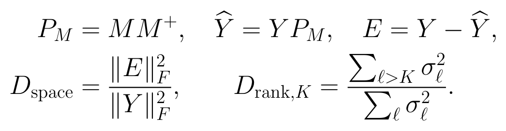
来源：附件公式；已核对当前 Balloon 核心及本例数值实现
Y 将 HbO 的时间×通道矩阵与 HbR 矩阵上下拼接；本例形状为 482×3。M 是 3×1 固定读出，伪逆给出正交投影。平方和覆盖两个色团、全部时间和通道。自由秩残差允许重新选择空间方向，只保留 K 个奇异值。
计算时先把每个时刻的三通道观测看作一个向量，再投影到 M 指定的方向。投影向量和残差向量垂直，所以二者的平方能量恰好相加为总能量。第一步允许核心时间轨迹完全自由，不需要先拟合动力学。
上式的简单右投影使用本例无缺失、通道共用时间算子的条件。若有缺失支持或通道特异性处理，必须将掩码和完整处理算子纳入观测设计后再投影；不能把缺失值补零后照搬这个矩阵公式。
下一页比较三个已知例：原空间方向、只旋转空间方向、增加一个正交空间维度。第一项看固定方向能否解释；第二项自由秩残差允许重选方向，用来区分方向错误与源数不足。
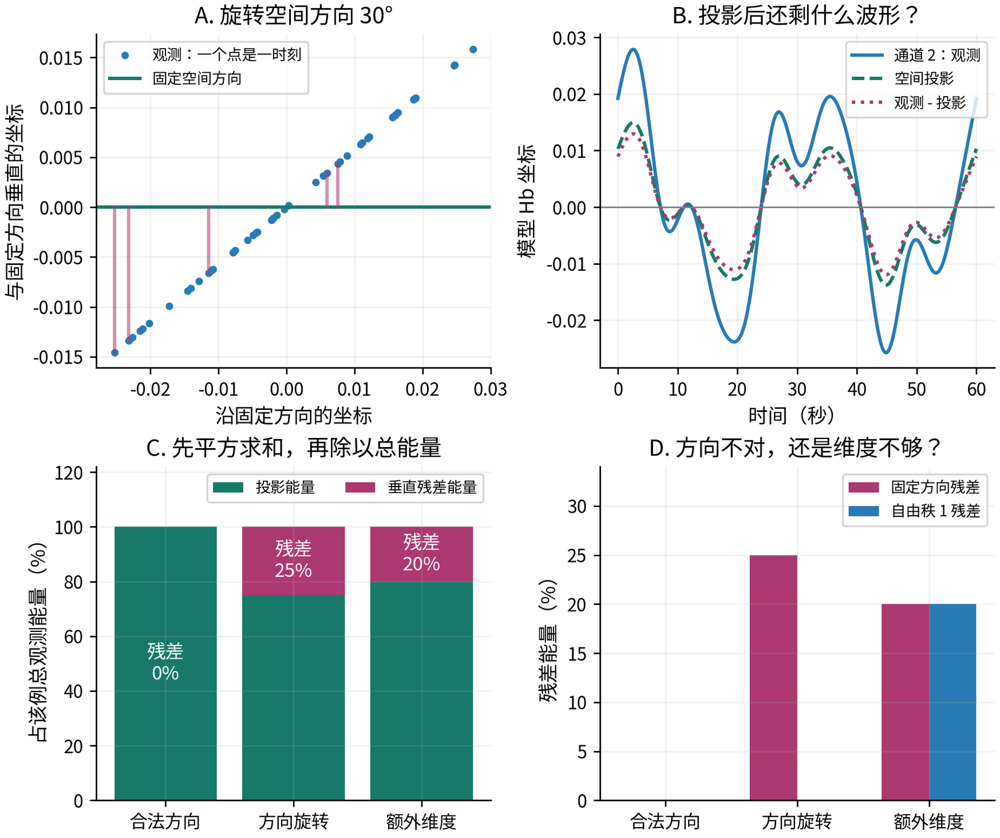
来源：本次合成示例：summary.json、arrays.npz；illustrate_model_compatibility.py
旋转例的残差平方和为 0.01899529，总平方和为 0.07598115，相除为 0.25。自由秩 1 可以恢复旋转后的方向，因此其残差近于零。额外成分的长度是原成分的一半，能量是四分之一；残差占总能量为 0.25/(1+0.25)=20%，固定方向与自由秩 1 均得到该值。
对同一尺度、掩码和观测算子，这个自由轨迹投影残差是完整物理模型误差的下界：放开上游驱动和生理参数也不能把固定空间之外的部分拟合出来。它定位的是读出合同的局限；不能凭此给残差贴上头皮、仪器或脑源标签。
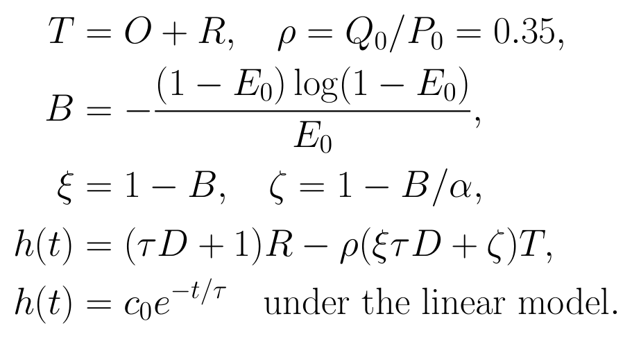
来源：附件公式；已核对当前 Balloon 核心及本例数值实现
D 表示时间求导。E0 是模型基线氧提取分数，α 控制体积与静脉流出的关系；B 是两种 Hb 对小流量变化的响应系数之差。本例 B=0.819533、ξ=0.180467、ζ=-1.561040。τ 是共同运输时间，c0 代表允许的 Hb 与体积初态差。该关系不使用 EEG，也不依赖上游 κ 或神经血管增益。
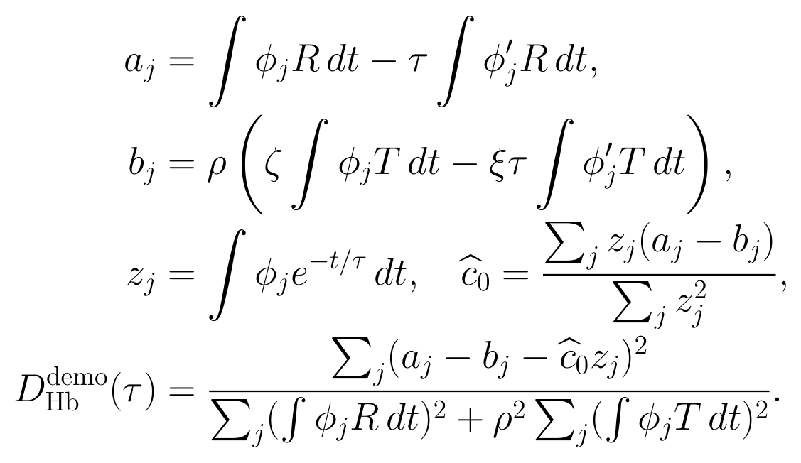
来源：附件公式；已核对当前 Balloon 核心及本例数值实现
把曲线乘光滑权函数后积分；分部积分把导数移到已知权函数上，避免直接微分含噪 Hb。共用 50 个积分窗，总宽分别为 8、16 秒，中心间隔 2 秒；每个权函数的积分为 1。重叠积分窗不是独立样本。每个候选 τ 都重新估计 c0。
图三先固定真实 τ=2 秒，以便把扰动的作用单独显示；参数范围内能否减小残差，要看后面的剖面。共同缩放 O、R 会同时缩放分子与分母，故本教学量不变。单独改变 HbR 则一般会破坏闭合。若分母接近零，输出应是“信息不足”，不能把零信号当成强支持。
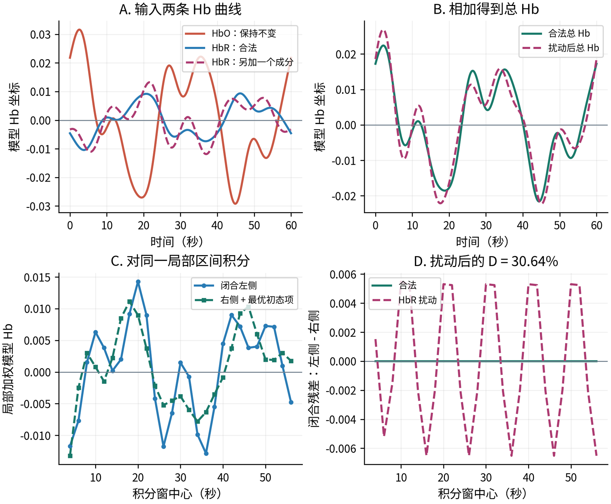
来源：本次合成示例：summary.json、arrays.npz；illustrate_model_compatibility.py
| 中心 24 秒、总宽 8 秒 | 数值（模型 Hb 坐标） |
|---|---|
| 左侧 a | -0.00421513 |
| 右侧 b + 初态项 | -0.00215091 |
| 残差：左侧减右侧 | -0.00206422 |
| 全部积分窗残差平方和 | 0.00062935 |
| 固定分母 | 0.00205369 |
合法例 D=4.75e-18；扰动后 D=0.306450（30.64%）。本例无噪，残差来自已知额外成分。实测残差还可能包含噪声、标定、非线性近似和预处理影响。
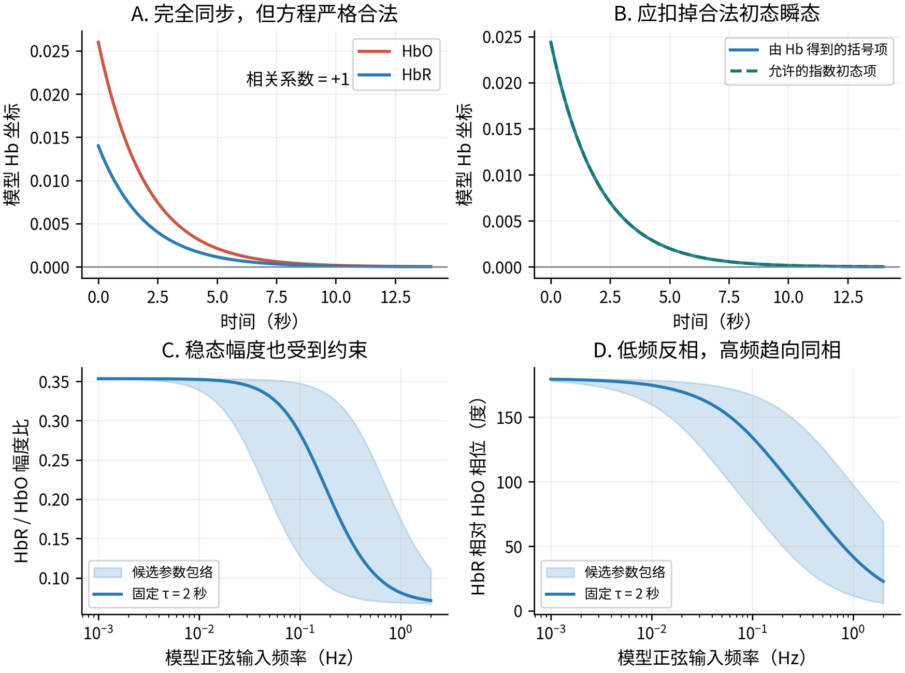
来源：本次合成示例：summary.json、arrays.npz；illustrate_model_compatibility.py
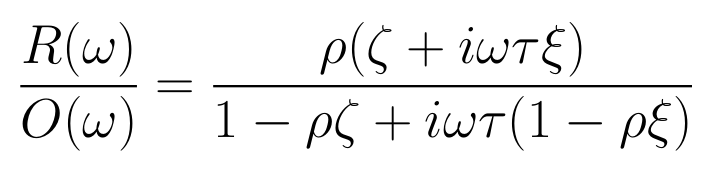
来源：附件公式；已核对当前 Balloon 核心及本例数值实现
ω=2π×频率；图的频率单位为 Hz。该式适用于处理了初态与窗边界的线性稳态；实测近零 Fourier 系数不应直接相除。
上排两条 Hb 曲线相关系数严格为 +1。允许初态后 D=1.68e-18；错误地把初态项固定为零时 D=1.5164，即 151.64%。这就是只看相关、或遗漏合法瞬态的误判。
稳态低频极限的 HbR/HbO 比为 -0.35332，高频极限为 +0.06742。因而相位必须与幅度一起判断。初态松弛与高频稳态同相是不同机制，不能相互代替。30 秒窗的基本频率间隔约 0.033 Hz，无法独立完成 0.01 Hz 的整周期幅相检验。
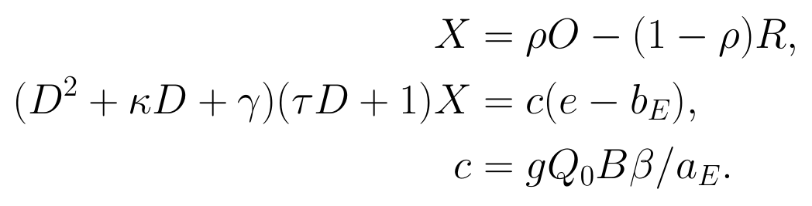
来源：附件公式；已核对当前 Balloon 核心及本例数值实现
X 为氧合组成对比；κ、γ 控制上游流量动态，τ 控制下游运输。复合增益 c 同时包含 Hb 标度、神经血管增益和 EEG 读出增益，拟合到 c 不代表独立识别出其中任何一个生理参数。本例偏置 b_E=0 已知。
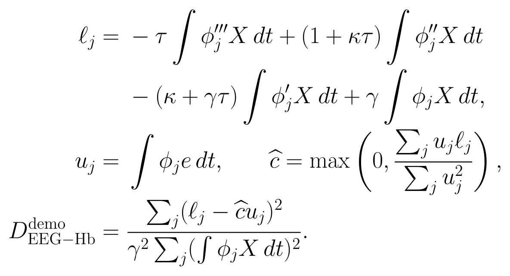
来源：附件公式；已核对当前 Balloon 核心及本例数值实现
左侧由 Hb 的四个加权积分得到，右侧由同一积分窗内的 EEG 特征得到。c 用全部 50 条约束统一拟合，不按局部窗口分别调幅。主例固定 τ=2 秒、κ=0.64；后续 τ 剖面会在每个候选点重新拟合 c。若 c 的最优值在零边界，需要单独报告。
多核实测模型还需要冻结的 EEG loading 和 Hb mixing 把两模态对应到同一驱动组合。任意一个 EEG 电极与任意一个 Hb 通道不能直接套用单核公式。实际时间滤波、偏置和掩码也必须进入观测设计；完整窗口重建属于条件诊断，不是未来预测。
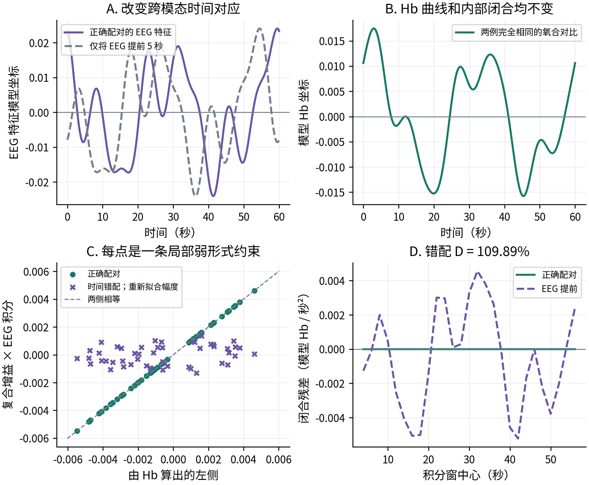
来源：本次合成示例：summary.json、arrays.npz；illustrate_model_compatibility.py
正确配对的跨模态 D=1.62e-15；提前 5 秒后 D=1.098907，即 109.89%。尽管错配例重新拟合了复合增益（从 0.286836 变为 0.065501），时间结构仍然对不上。Hb 内部闭合完全保持原值。
这个响应模式把问题定位到跨模态时间对应或共享驱动合同。实测中还需用正确对齐、错误配对、EEG 特征替换等控制进一步区分来源；单个跨模态高分不自动证明神经血管机制本身错误。
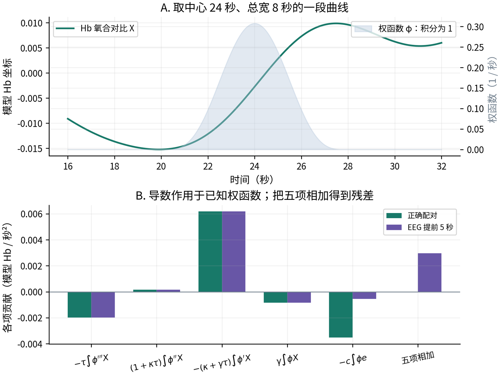
来源：本次合成示例：summary.json、arrays.npz；illustrate_model_compatibility.py
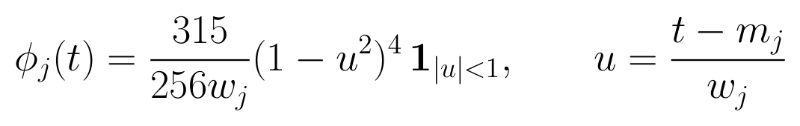
来源：附件公式；已核对当前 Balloon 核心及本例数值实现
m_j 为积分窗中心，w_j 为半宽，取 4 或 8 秒；完整宽度为 8 或 16 秒。函数及其前两阶导数在端点为零，所以三次分部积分没有边界项。导数由这条已知多项式解析得到；观测数据仅参与加权积分。
局部残差帮助定位冲突在什么时间尺度、什么位置出现。全窗指标将所有残差平方后相加；不能先把有正有负的残差直接相加，因为它们可能抵消。若要做噪声检验，必须使用这些重叠积分之间的完整协方差，不能把每项独立除以一个 SD 后当作独立检验。
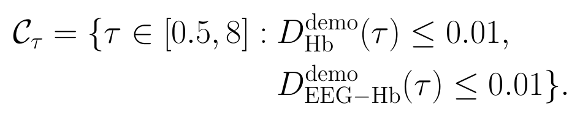
来源：附件公式；已核对当前 Balloon 核心及本例数值实现
这里只展示全参数集合在 κ、γ、α、E0 固定时的一维切片。τ 网格步长为 0.05 秒，共 151 点；c0 与 c 分别剖面拟合。1% 是为了展示集合形状而声明的教学能量容差，不是实测 5% 显著性界。
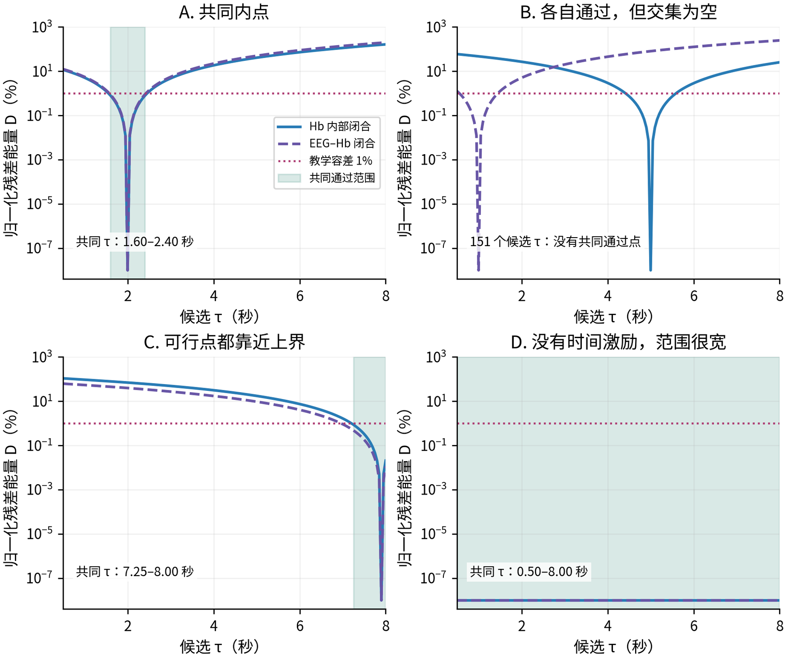
来源：本次合成示例：summary.json、arrays.npz；illustrate_model_compatibility.py
| 图中情形 | 实际计算出的交集 | 能作出的判断 |
|---|---|---|
| 共同内点 | 1.60–2.40 秒，17 点 | 声明域内存在共同解释；不是参数真值已被实测恢复。 |
| 跨约束冲突 | 0 / 151 个共同点 | 在这个切片与容差内没有共同解释；仍不是整个连续参数域的不存在性证明。 |
| 上界压力 | 7.25–8.00 秒，16 点 | 所有相容点都在声明域最上方 10% 内。不能只报告最优值贴边。 |
| 激励不足 | 0.50–8.00 秒，全部 151 点 | 常量观测没有时间常数辨识力；低残差只说明未检出偏离。 |
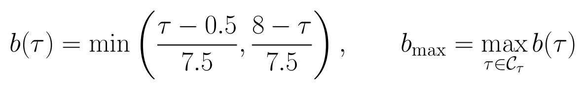
来源：附件公式；已核对当前 Balloon 核心及本例数值实现
b 衡量候选点距离最近边界占整个声明域宽度的比例；b_max 问的是所有相容解中，最靠内部的一点能走多深。上界例的 b_max=0.10，说明找不到离边界超过全域宽度 10% 的相容点。这里的 10% 只是本例几何描述，不是普适生理阈值。
如果最优点在边界，但共同集合含有明显内点，数据不迫使解释依赖边界。若集合全部贴边，才需要检查参数域是否过窄、观测尺度是否有偏差、模型是否借极端参数吸收错误。扩大范围属于新敏感性条件，不能把新域的结果覆盖到原域上。
常量例在所有 τ 上都满足闭合，因为时间导数没有信息。若先去基线，它会变成零信号，教学归一化分母也为零，此时应输出“证据不足”。非常宽的集合、低 SNR 和缺乏激励都需要与低残差同时报告。
真正的共同参数集合需要对同一个参数向量同时检查所有适用约束，并保留参数相关性。把多维集合各自压成单参数区间再求交会丢失这种相关性；区间相交也不一定意味着存在共同多维解。本图只使用一维，故不发生该问题。完整非线性条件、空间合同与观测校准也须在适用时进入正式集合。
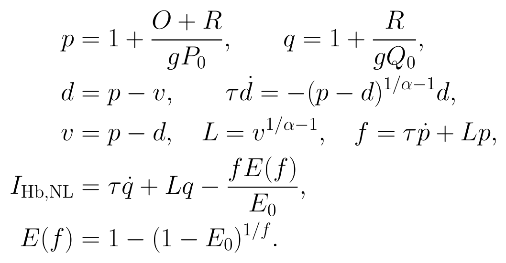
来源：附件公式；已核对当前 Balloon 核心及本例数值实现
先只用 O、R 恢复 p、q；给定 d0 后积分得到 d，进而得到体积、流量与脱氧 Hb 流入。最后检查脱氧 Hb 变化加流出是否等于流入。计算残差时没有使用生成器中的隐藏体积和流量。完整轨迹必须满足 f、v、p、q 为正，以及 Q0q≤P0p；非法候选不得裁剪成合法数值。
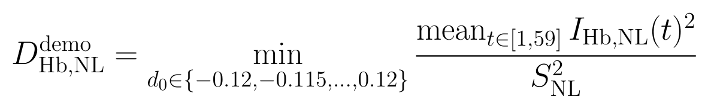
来源：附件公式；已核对当前 Balloon 核心及本例数值实现
本例固定 τ=2 秒、α=E0=0.32、g=1，扫描 49 个初态差。固定分母 S_NL²=0.0011573447，等于合法大响应中“归一化脱氧流入减基线 1”的均方；三个例共用该值。该分母来自教学参照，不是噪声方差，亦不能与线性分数直接比大小。
主图的小响应与大响应使用同一双脉冲形状，驱动峰值系数从 0.012 改为 0.22；所有初始物理状态保持静息。额外氧合扰动在 HbR 中加入 Q0×0.04×sin(2πt/10) 再乘以 sin(πt/60) 的四次方，在 HbO 中减去同一量，因此总 Hb 保持不变。
这一层对坐标要求最强。本例知道绝对基线与共同增益，使用密集无噪合成曲线的三次样条导数。去基线、高通或空间混合后的实测 Hb 通常不能这样直接反演；缺少绝对坐标时应标记“不适用／待校准”，而不是强行补回状态。本图的条件结果也没有排除其他 τ 或标定参数下的解释。
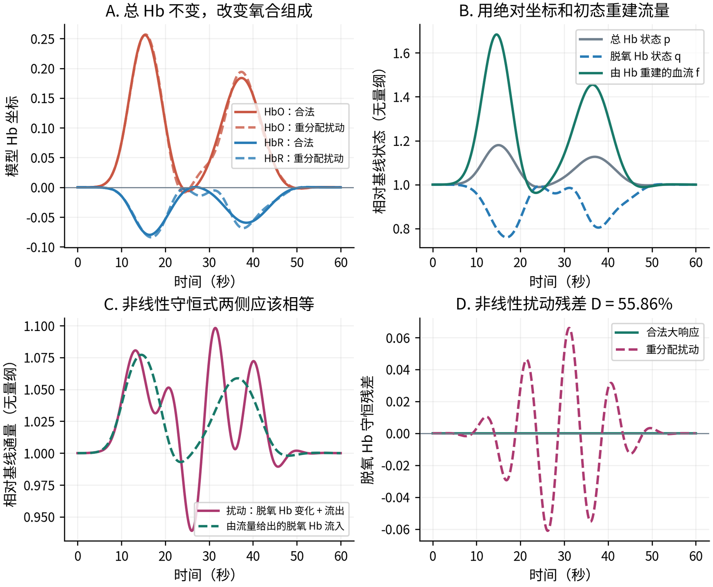
来源：本次合成示例：summary.json、arrays.npz；illustrate_model_compatibility.py
| 34 秒处的计算 | 数值 |
|---|---|
| p；q | 1.100802；0.917740 |
| 重建的体积 v；流量 f | 1.100802；1.381337 |
| 脱氧变化 + 流出 | 1.038829 |
| 脱氧流入 | 1.051576 |
| 非线性残差 | -0.012747 |
合法大响应的非线性 D=2.81e-20；扰动例为 0.558634，即 55.86%。49 个候选初态全部数值有效；在本例固定参数与候选初态范围内，允许初态变化仍不能把扰动残差降到零。
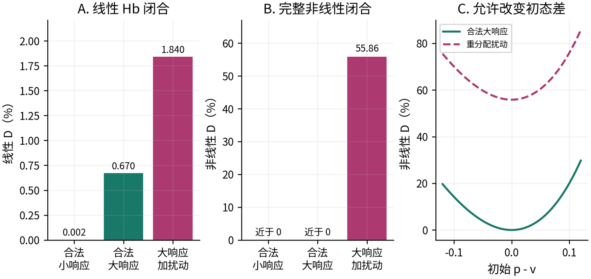
来源：本次合成示例：summary.json、arrays.npz；illustrate_model_compatibility.py
从小响应到大响应，线性 Hb 闭合 D 从 0.00222% 增至 0.67025%，约为原来的 302.5 倍；完整非线性闭合仍接近零。这说明线性残差可以随合法响应幅度增加。大响应本例的 0.67% 仍低于前面用于集合演示的 1% 容差，这里没有把它宣判为异常。
加入氧合扰动后，线性 D 为 1.83992%，非线性 D 为 55.86%。相对于合法大响应，非线性复核能明确区分这个人工扰动。这里只验证了一个已知控制的响应，不代表已经证明对所有可能失配都有特异性。
积分步长减半的核验中，完整前向观测的最大绝对变化为 6.38e-12 个模型坐标单位。非线性初态剖面中的非法点和求解失败数均为零。记录这些数值状态，才能避免把求解器误差当成科学冲突。
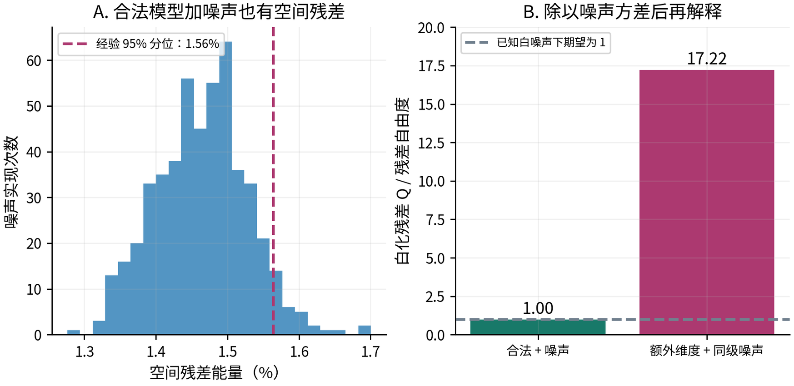
来源：本次合成示例：summary.json、arrays.npz；illustrate_model_compatibility.py
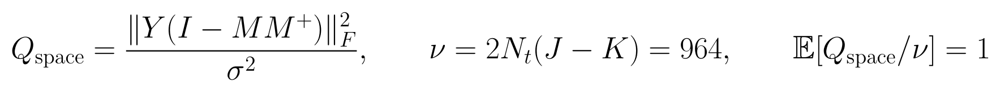
来源：附件公式；已核对当前 Balloon 核心及本例数值实现
本例时间点数 N_t=241、通道数 J=3、核数 K=1。这条期望关系只用于已知、独立、同方差的高斯噪声，且 M 固定、没有滤波或缺失。真实时间处理、相关噪声、参数选择与秩变化会改变残差分布，必须连同实际流程重新校准。
即使模型完全合法，空间残差的经验 95% 分位也达到 1.564%。白化后的 Q/ν 均值为 0.9979，符合期望 1；额外维度加同级噪声后 D=20.533%，Q/ν=17.217。噪声造成的偏离与结构偏离应在同一流程下比较。
前面用于讲解共同集合的 1% 不是这里估计的空间阈值，也不能跨指标通用。正式动力学检验要考虑各弱积分之间的协方差，或使用包含掩码、时间变换和允许初态的离散设计，在合成零分布中校准参数选择后的统计量。训练 SD 只平衡尺度，不能自动替代噪声 SD。
| 观察到的组合 | 可支持的解释 | 应进一步定位什么 |
|---|---|---|
| 固定空间高，自由秩低 | 固定方向不够合适，源数未必不足。 | 空间 loading、几何、通道增益。 |
| 固定空间和自由秩都高 | 当前 K 难以容纳观测；仍包含噪声影响。 | 源数、额外成分、空间噪声结构。 |
| 空间低，Hb 内部高 | 问题已经出现在 Hb 层，不需要先归咎 EEG。 | Hb 标定、时间处理、初态和完整非线性。 |
| Hb 内部低，跨模态高 | Hb 可以自洽，但与给定 EEG 映射和时序不相容。 | 时间对齐、EEG 特征、配对和共享驱动。 |
| 两项各自低，共同集合空 | 在声明搜索与容差内，两套约束没有共同解释。 | 同一参数向量的联合可行性、搜索覆盖及标定敏感性。 |
| 线性高，完整非线性低 | 线性近似可解释至少部分异常。 | 大响应幅度、可恢复绝对坐标、适用时间尺度。 |
| 全部低，集合很宽 | 当前分辨率未检出偏离，但参数信息不足。 | 激励、SNR、观测时长和参数敏感度。 |
| 全部低，集合有稳定内点 | 声明模型与观测在当前检验力下相容。 | 独立数据重复性与任务外验证；不能直接认定生理真值。 |
相容是相对当前模型、观测合同、噪声、参数域和检验力的判断。任何一项都不能单独完成成分归属、证明生理因果，或证明潜变量准确。空间投影下界具有明确数学保证；有限网格搜不到解与局部优化残差较高，则必须保留数值搜索层面的限定。
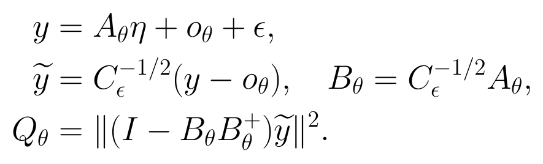
来源：附件公式；已核对当前 Balloon 核心及本例数值实现
y 是实际可见观测，η 收集允许的驱动与初态，o 是已知观测偏置。A 包含模型传播、空间读出、时间处理与可见行选择；C 是该支持上的噪声协方差。先白化，再投影到模型输出子空间，最后计算垂直残差。若协方差奇异，只能在有定义的支持上处理，不能机械求逆。
| 需要检验什么 | 同一设计怎样使用 |
|---|---|
| 固定空间容量 | 允许潜在 Hb 时间轨迹完全自由，只保留冻结空间读出与观测算子；其残差给出空间合同下界。 |
| Hb 内部关系 | 在线性设计中只选择可见 Hb 行，保留足够自由的驱动和允许初态。 |
| EEG–Hb 共同解释 | 加入对应 EEG 特征行与冻结映射，并在同一候选参数向量下计算；与 Hb-only 结果并列报告。 |
| 噪声与参数选择 | 在合法生成器上经过同一采样、预处理、缺失与参数搜索流程，校准最终选择后统计量；过程噪声是否属于零假设也必须预先声明。 |
现有 build_shared_driver_design 已包含每采样驱动和五个初始血管坐标；fit_waveform_subspace 可用于允许轨迹空间的投影筛查。其现有 SD 加权不是自动成立的噪声白化似然，正式噪声检验仍需独立校准。把时间基设得过窄也会制造表示残差，不应误归为生理冲突。
这个离散计算与图解中的弱形式不是同一个数值分数：弱形式便于解释局部冲突，离散设计便于准确纳入实际处理边界。尤其要区分：自由空间轨迹的残差是完整模型下界；一般线性化动态设计的残差并不自动成为完整非线性模型下界。
| 计算层级 | 建议保留的输出与分母 |
|---|---|
| 观测合同 | 数据集、被试、会话、任务、通道或空间核心、时间支持、预处理、掩码、单位与冻结映射。K2 先核对跨模态驱动组合。 |
| 局部窗口 | 空间原始残差、自由秩残差、Hb 与跨模态弱残差随时间的曲线、信号能量、适用状态和数值失败。不能只保留成功窗口。 |
| 会话或连续长段 | 共同参数集合、宽度、边界距离、校准敏感性。低频检验使用足够长的有效观测支持；不因采样率高就声称频率分辨率高。 |
| 控制与噪声 | 合法同相初态、共同尺度变化、相对色团标定、错配、额外成分、非线性幅度及噪声水平；每项先验证零分布与检验力，再冻结判定规则。 |
| 被试统计 | 先按声明方式汇总同被试的窗口与会话，再跨被试汇总。报告计划数、可用数、失败数、证据不足数与各自分母；重叠窗口不是独立被试。 |
| 群体比较 | 同一被试、同一条件的配对变化；给出中位数/P90、被试层区间、数据集差异。若做显著性，预先声明重采样单位、参数冻结与多重比较处理。 |
推荐按已核对的空间、Hb 内部、跨模态共同参数三个入口开始；非线性层只应用于满足绝对坐标与标定要求的记录。每个单位分别标注“超出已校准容差”“当前分辨率未检出偏离”“证据不足”“不适用”“数值失败”。这些状态不能合并成一个好坏二分类。
本次交付是计算与解释图解，尚未开展全面实测统计。后续报告中的偏离率、被试区间与参数分布应来自正式保留证据；本图解的 25%、20%、30.64% 等数值都是已知构造的教学例，不是当前数据集结论。
输入论述：用户提供的五项模型相容性检验文本；原文以 2026-10-21 提交 81c3d304 为依据。本次重新核对当前本地实现。
当前动力学与观测 owner：src/inference/t3a_balloon_robust_ssm.py；前向复用 src/inference/shared_driver_reconstruction.py:nonlinear_driver_forward。线性生成直接使用核心静息 Jacobian。
已核对历史公开核心：https://github.com/Kevin65536/physiological-semantic-tokenizer/blob/81c3d3045c001b28a75e2789921e4f25647595a9/src/inference/shared_driver_rk4.py。当前本地源码快照与 Git 身份保存在本次来源记录。
空间实验参数与窗口合同：experiments/configs/physiology_semantic_tokenizer/shared_driver_spatial_v1.yaml。候选域来源：shared_driver_parameter_stability_v1.yaml。本例一维切片不是该实测实验的重新评价。
计算与图线 owner：experiments/scripts/illustrate_model_compatibility.py；保留 source_snapshot。数值 summary.json 与 arrays.npz；PDF/HTML 复用 render_source_diagnostics_report.py。
实际实验的观测与数据规则仍由 docs/DATA_CONTRACT.md 和相应 owning protocol 决定；本图解不变更研究状态，也不建立新的实测授权。